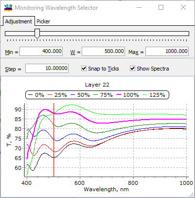

Spectra display
Spectra display
Navigation: OptiLayer Menu Commands > Results Menu > OptiLayer Monitor >
Spectra display
` <wavelength_adjustment.html>`__ ` <idh_monitor.html>`__ ` <gain_and_zero.html>`__
If, in the Monitoring Wavelength Selector, the option Show Spectra is selected, the spectrum of the monitoring signal after the deposition of the selected layer is displayed.

The red line designates the current monitoring wavelength. It is possible to drag it instead of using the slider at the top of this dialog. Several spectral curves related to 0%, 25%, 50%, 75%, 100% (thick magenta), and 125% of the layer thickness are shown in different colors. This is quite helpful for better manual selection of monitoring wavelengths. Also, it can be used for the visualization of expected broadband monitoring signals.